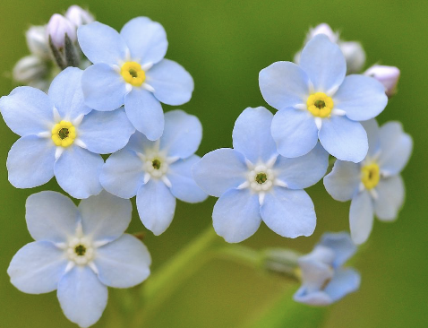
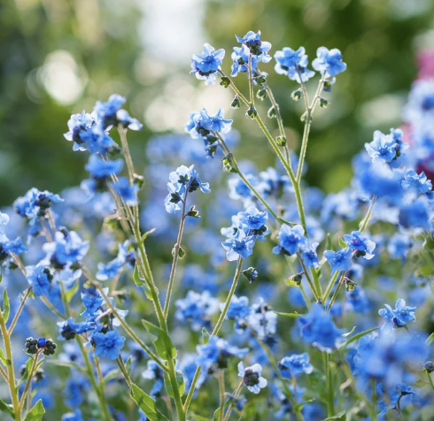
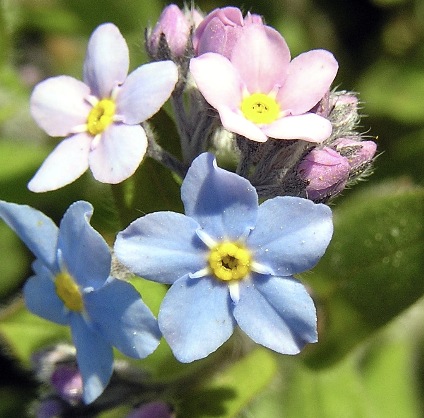

forget me nots are beutiful comenly light blue flowers often found in clusters of 5. they are very low maintnence and very easy to take casre off. I have always loved these flowers for there beutiful color and shape and I alkways dreamed of having a cottege covered in forget me nots.



they can often be found along streams, in gardens, and on cool river banks and are best grown in the shade.
Forget Me Nots symbolize true love, rememberence, and loyalty. and often reprosent a promise to remember someone as the name states.
homepage